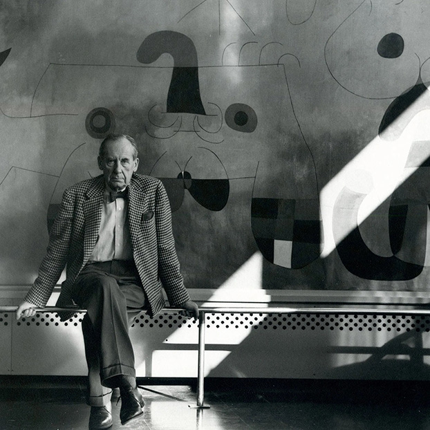
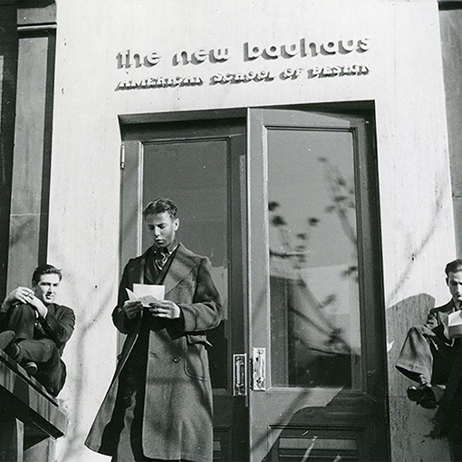
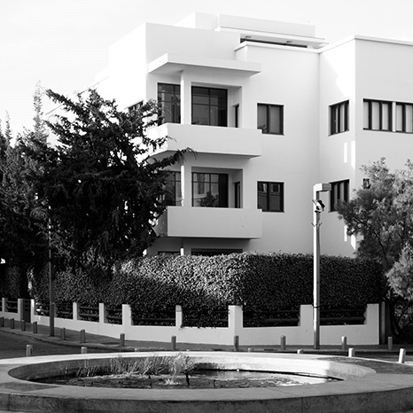
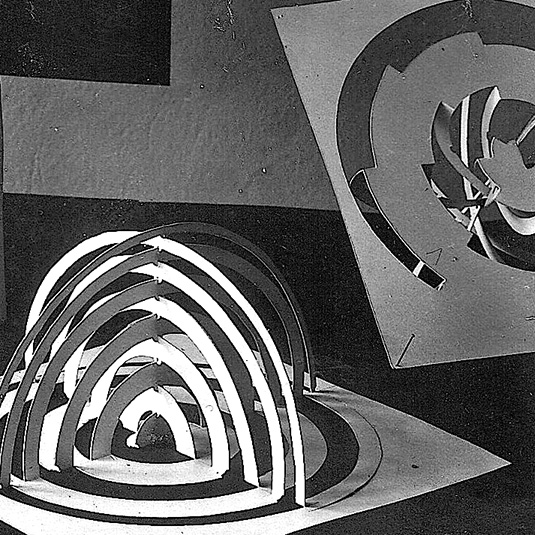
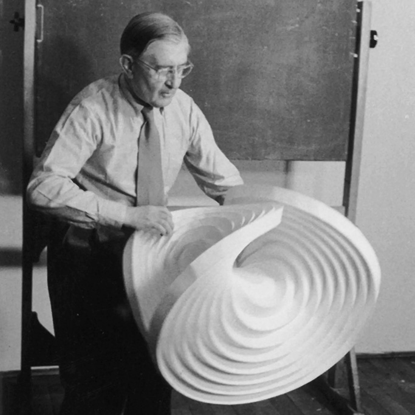
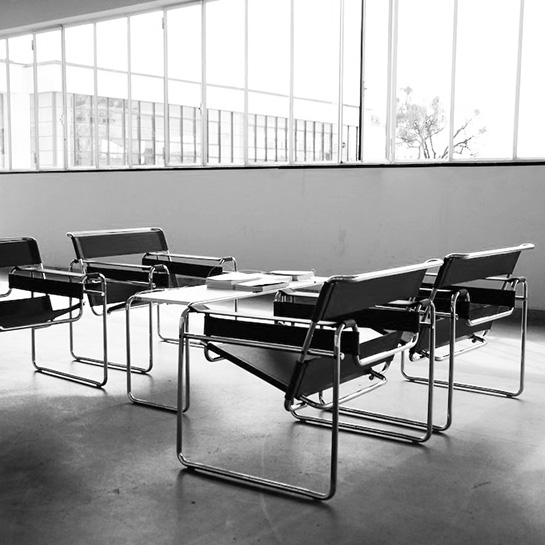
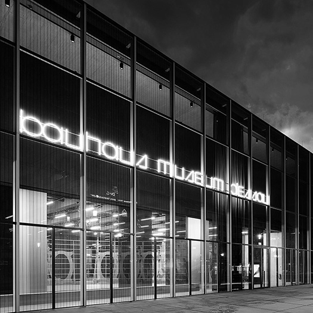
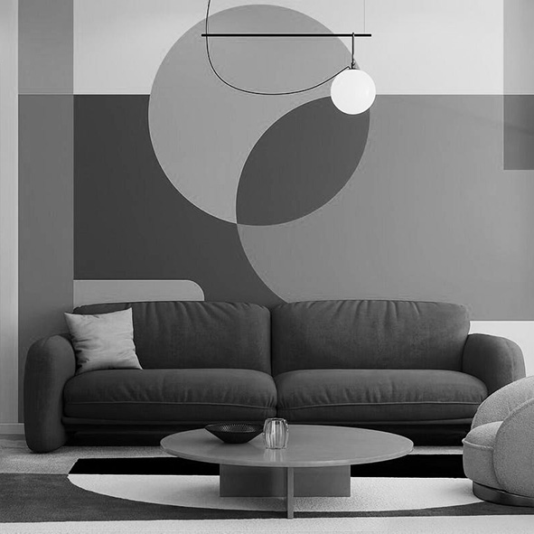

Following the school's closure in 1933, former faculty and students carried Bauhaus principles to other countries. Through teaching, architecture, and new institutions, they helped establish its influence internationally.

Walter Gropius and Marcel Breuer brought Bauhaus ideas into architectural education in the United States.

László Moholy-Nagy founded a new school that continued the Bauhaus's interdisciplinary approach.

More than 4,000 modernist buildings reflected Bauhaus and International Style influences. The area became a UNESCO World Heritage Site in 2003.
The Bauhaus connected artistic exploration with practical production, changing how design was taught and practiced. Its emphasis on experimentation, functionality, and interdisciplinary learning influenced generations of designers.

The preliminary course introduced students to color, form, materials, and composition through hands-on experimentation.

Founded in Germany, the school continued the Bauhaus tradition of connecting design theory with technology and practical application.

The Wassily and Cantilever chairs demonstrated how industrial materials could be used to create functional, modern furniture.
Although the Bauhaus closed in 1933, its ideas remain relevant to contemporary design. Its emphasis on functionality, collaboration, and the relationship between art and technology continues to inform design practices today.

International exhibitions and celebrations marked 100 years since the school's founding.
A European Commission initiative connecting design with sustainability, inclusivity, and quality of life.

Bauhaus principles continue to appear in architecture, furniture, typography, and visual communication.